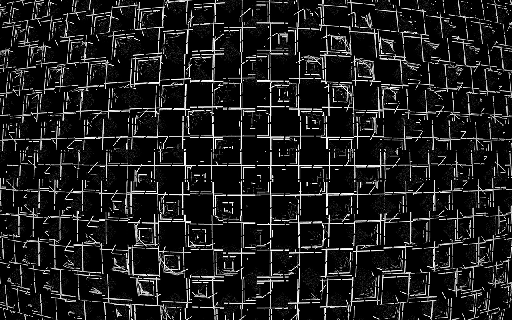

Polygonoscopy is a series of abstract videographies, recorded with the Kaleidoscope.
methascope — Frozen Methascope drops, similar to snowflakes.kaleidoscope — The Kaleidoscope records the intersection of overlapping structures.hypervoid — The Hypervoid is navigating the nullplane of dichromatic Anti-pigments.brane — Brane are digital fabrics.astratas — The Astratas topology oscillates to Polygonoscopic frequencies.ar moire — The Ar Moire diagrams are Polygonoscopic sounds.nervous — Nervous are studies of Polygonoscopic Fields.time alloy — The Time Alloy is a series of Polygonoscopic samples, created for The sartre mechanism.